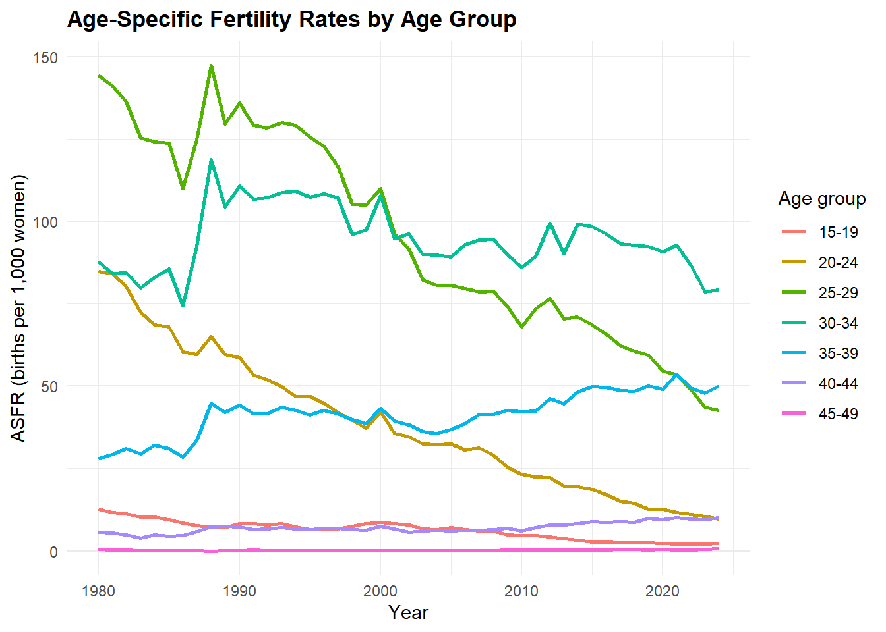
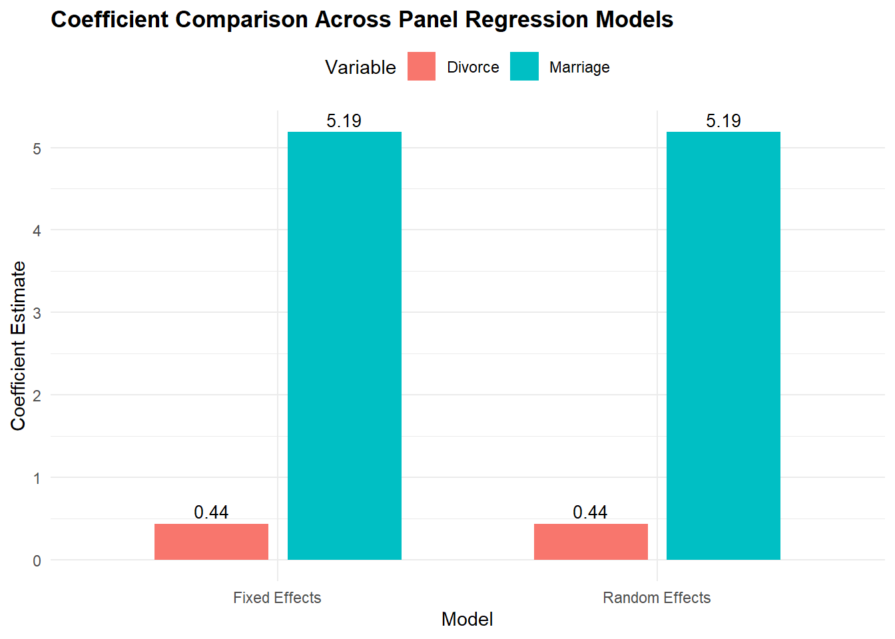

pacman::p_load(tidyverse, knitr, patchwork, plm, lmtest, sandwich)
coef_table <- function(model) {
ct <- coeftest(model, vcov = vcovHC(model, type = "HC1"))
data.frame(
term = rownames(ct),
estimate = unname(ct[, 1]),
std_error = unname(ct[, 2]),
statistic = unname(ct[, 3]),
p_value = unname(ct[, 4]),
row.names = NULL,
check.names = FALSE
)
}
analysis_df <- readRDS("data/analysis_df.rds")
tfr_df <- readRDS("data/tfr_df.rds")
asfr_df <- readRDS("data/asfr_df.rds")
series_key <- readRDS("data/series_key.rds")Panel Regression Analysis: Singapore Fertility Trends: A Visual Analytics Study
Load dataset
Panel Regression Analysis
Because the data contain repeated observations across age groups and years, panel regression is more suitable than a simple regression model.
The cross-correlation analysis was first used to explore possible lead-lag patterns across a 5-year window. Since the strongest co-movement for both marriage and divorce was observed at lag 0, the panel regression section focuses on the same-year specification as the main formal model. This allows the analysis to estimate the direction, coefficient size, and statistical significance of the relationships more explicitly within a panel-data framework.
Unlike the cross-correlation section, which uses the overall yearly series to examine the aggregate timing pattern, the panel regression here uses age-group-by-year observations with ASFR as the dependent variable. This makes age group an important part of the model structure, because fertility levels differ substantially across age groups and should not be treated as one pooled series.
1.1 Organising the EDA output for Panel Regression
The dataset prepared in the EDA section is already structurally suitable for panel regression. The regression section does not create a completely new dataset. Specifically, it combines the age-specific fertility dataset (asfr_df) with the yearly marriage and divorce indicators from analysis_df to form the panel dataset used for modelling.
| year | age_group | asfr | marriage | divorce |
|---|---|---|---|---|
| 1980 | 15-19 | 12.7 | 9.8 | 0.8 |
| 1981 | 15-19 | 11.8 | 10.6 | 0.9 |
| 1982 | 15-19 | 11.4 | 9.7 | 0.9 |
| 1983 | 15-19 | 10.4 | 9.0 | 1.0 |
| 1984 | 15-19 | 10.3 | 9.8 | 0.9 |
| 1985 | 15-19 | 9.6 | 9.2 | 0.9 |
| 1986 | 15-19 | 8.6 | 7.7 | 1.0 |
| 1987 | 15-19 | 7.7 | 8.9 | 1.1 |
| 1988 | 15-19 | 7.3 | 9.3 | 1.1 |
| 1989 | 15-19 | 7.2 | 8.7 | 1.1 |
Observation:
The dataset is arranged in panel form, where each row represents one age group in one year. asfr is the age-specific fertility rate, measured as live births per 1,000 women in that age group. marriage is the crude marriage rate per 1,000 residents, and divorce is the crude divorce rate per 1,000 residents.
Because age group identifies who is being observed and year identifies when the observation takes place, this dataset is organised in a suitable format for panel regression. This is also where the regression section differs from the cross-correlation section: instead of using one overall fertility series, the regression uses repeated fertility observations across age groups over time.
panel_df <- asfr_df %>%
transmute(
year,
age_group = as.character(age_band),
asfr = value
) %>%
left_join(analysis_df %>% select(year, marriage, divorce), by = "year") %>%
drop_na(age_group, year, asfr, marriage, divorce) %>%
arrange(age_group, year)
panel_preview <- panel_df %>%
slice_head(n = 10)
knitr::kable(
panel_preview,
digits = 3,
caption = "Preview of the age-group-by-year panel dataset"
)1.2 Exploratory Panel Visualisation
Before performing regression, it is useful to visualise the panel data. This step helps answer a basic question before modelling: Do the age groups actually look different from one another? If they do, panel methods make more sense because the analysis needs to account for those differences.

Observation:
The chart shows that fertility is not the same across age groups. Younger and older groups have much lower ASFR, while the middle age groups, especially 25-29 and 30-34, have much higher fertility levels. The chart also shows that the lines move differently over time. For example, some younger age groups generally decline, while older age groups such as 35-39 become more important later on. This tells us that fertility behaviour differs across age groups, so a model that recognises those group differences is more appropriate than treating all observations as one pooled series.
ggplot(panel_df, aes(x = year, y = asfr, colour = age_group)) +
geom_line(linewidth = 0.9) +
labs(
title = "Age-Specific Fertility Rates by Age Group",
x = "Year",
y = "ASFR (births per 1,000 women)",
colour = "Age group"
) +
theme_minimal() +
theme(plot.title = element_text(face = "bold"))1.3 Fixed-Effects Panel Regression Model
This model is performed because it helps answer the following question:
“Within the same age group, when marriage or divorce changes over time, does fertility also tend to change?”
Some age groups naturally have higher fertility than others. The fixed-effects model accounts for these stable age-group differences by focusing on how fertility changes within the same age group across years.
| term | estimate | std_error | statistic | p_value |
|---|---|---|---|---|
| marriage | 5.187 | 2.641 | 1.964 | 0.05 |
| divorce | 0.440 | 5.015 | 0.088 | 0.93 |
Observation:
The fixed-effects model estimates a positive coefficient for marriage of 5.187. This suggests that, within the same age group over time, a 1-point increase in the crude marriage rate per 1,000 residents is associated with an increase of about 5.187 births per 1,000 women in ASFR, holding divorce constant. However, the p-value is 0.050, which places the result at the margin of the conventional 5% significance threshold. This should therefore be interpreted as borderline rather than strong statistical evidence.
In contrast, the divorce coefficient is 0.440, indicating only a very weak relationship with fertility in this model. The evidence for divorce is not statistically strong.
Overall, the fixed-effects model suggests that marriage may have a modest positive association with fertility, while divorce does not show clear evidence of a meaningful association.
Note: Although the fixed-effects model compares changes within each age group over time, it still estimates one overall coefficient for each explanatory variable. This means each age group contributes to the estimation, but the final regression table reports the combined relationship for the full panel.
panel_pdata <- pdata.frame(panel_df, index = c("age_group", "year"))
fe_model <- plm(
asfr ~ marriage + divorce,
data = panel_pdata,
model = "within"
)
fe_tbl <- coef_table(fe_model)
knitr::kable(
fe_tbl,
digits = 3,
caption = "Fixed-effects panel regression with robust standard errors"
)1.4 Random-Effects Panel Regression and Hausman Comparison
The random-effects model is included mainly as a supporting comparison to the fixed-effects model. Since the fixed-effects model focuses on changes within the same age group over time, the random-effects model uses both changes within age groups over time and differences across age groups. We care about differences between age groups because fertility is naturally higher in some age groups than others, as shown in Section 1.2.
After performing the random-effects model, a Hausman test is used to compare the fixed-effects and random-effects results and check whether the overall conclusion changes meaningfully.
| term | estimate | std_error | statistic | p_value |
|---|---|---|---|---|
| (Intercept) | 1.342 | 7.218 | 0.186 | 0.853 |
| marriage | 5.187 | 2.645 | 1.961 | 0.051 |
| divorce | 0.440 | 5.023 | 0.088 | 0.930 |
| statistic | p_value |
|---|---|
| 0 | 1 |
Observation:
The random-effects results are very similar to the fixed-effects results. Marriage still has a positive coefficient of about 5.187, but its p-value of 0.051 is slightly above the conventional 5% threshold. This means the result is not statistically significant at the 5% level, although it may still be described as borderline or weak evidence of a positive association.
Divorce continues to show no meaningful statistical relationship with fertility, with a p-value of 0.930.
The Hausman test gives a p-value of 1.000, suggesting no meaningful difference between the fixed-effects and random-effects results in this dataset.
Overall, both models lead to the same broad conclusion: marriage shows a modest positive but statistically weak relationship with fertility, while divorce does not show clear evidence of association.
re_model <- plm(
asfr ~ marriage + divorce,
data = panel_pdata,
model = "random"
)
re_tbl <- coef_table(re_model)
hausman_test <- phtest(fe_model, re_model)
hausman_tbl <- tibble(
statistic = unname(hausman_test$statistic),
p_value = unname(hausman_test$p.value)
)
knitr::kable(
re_tbl,
digits = 3,
caption = "Random-effects panel regression with robust standard errors"
)
knitr::kable(
hausman_tbl,
digits = 3,
caption = "Hausman test: fixed effects versus random effects"
)1.5 Coefficient Comparison Across Panel Models
This chart compares the estimated coefficients across the fixed-effects and random-effects models. It helps show whether the direction and size of the marriage and divorce coefficients remain similar across the two panel specifications.

Observation:
The chart compares the estimated coefficients from the fixed-effects and random-effects models. Marriage remains positive in both models, while divorce remains much weaker. This suggests that the direction and relative size of the coefficients are broadly consistent across the two panel specifications.
coef_plot_df <- bind_rows(
coef_table(fe_model) %>%
mutate(model = "Fixed Effects"),
coef_table(re_model) %>%
mutate(model = "Random Effects")
) %>%
mutate(
term = case_when(
term == "marriage" ~ "Marriage",
term == "divorce" ~ "Divorce",
TRUE ~ term
)
) %>%
filter(term %in% c("Marriage", "Divorce"))
ggplot(coef_plot_df, aes(x = model, y = estimate, fill = term)) +
geom_col(position = position_dodge(width = 0.7), width = 0.6) +
geom_text(
aes(label = round(estimate, 2)),
position = position_dodge(width = 0.7),
vjust = -0.4,
size = 3.5
) +
labs(
title = "Coefficient Comparison Across Panel Regression Models",
x = "Model",
y = "Coefficient Estimate",
fill = "Variable"
) +
theme_minimal() +
theme(
plot.title = element_text(face = "bold"),
legend.position = "top"
)Conclusion
Across both panel models, marriage has a positive coefficient and remains close to the threshold of statistical significance, while divorce does not show a clear relationship with fertility in this dataset. These results suggest that marriage may be more closely associated with fertility patterns than divorce, although the overall evidence remains modest rather than strong.